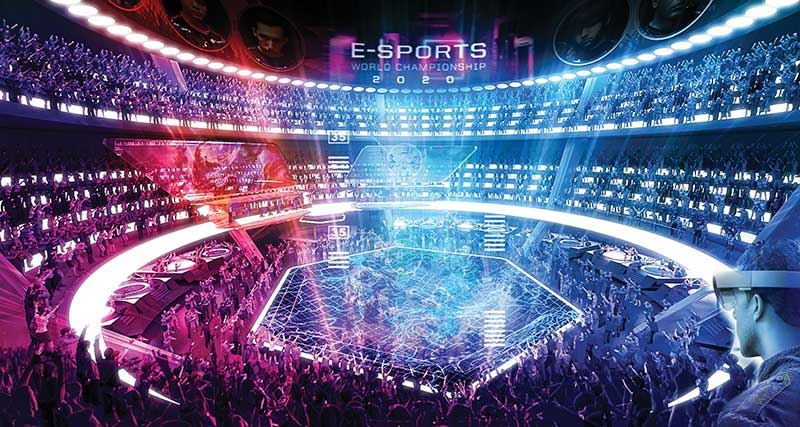
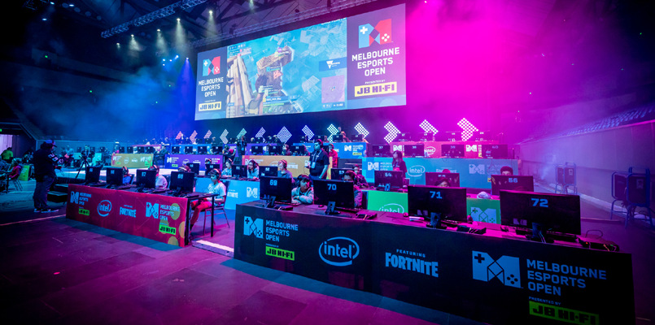

E-Sports(Electronic Sports)
What is it?
Esports often takes the form of organized, multiplayer video game competitions, particularly between professional players, individually or as teams. Although organized competitions have long been a part of video game culture, these were largely between amateurs until the late 2000s, when participation by professional gamers and spectatorship in these events through live streaming saw a large surge in popularity by the 2010s. E-sports was a significant factor in the video game industry, with many game developers actively designing and providing funding for tournaments and other events. The most common video game genres associated with esports are multiplayer online battle arenas, first-person shooters, fighting, card games, battle royales, and real-time strategy. Popular esport franchises include League of Legends, Dota, Counter-Strike, Overwatch, Super Smash Brothers and StarCraft
Is it an actual sport?
Labeling video games as sports is a controversial point of debate.While some point to the growth in popularity of esports as justification for designating some games as sports, others contend that video games will never reach the status of "true sports".However popularity is not the only reason identified: some have argued that "careful planning, precise timing, and skillful execution" ought to be what classifies an activity as sport, and that physical exertion and outdoor playing areas are not required by all traditional or non-traditional "sports". In a 2014 technology conference, when asked about the recent buyout of popular game streaming service Twitch, ESPN president John Skipper described esports as "not a sport – but a competition."
Gloal recognisation
China was one of the first countries to recognize esport as a real sport in 2003, despite concerns at the time that video games were addicting. Through this, the government encouraged esport, stating that by participating in esports, players were also "training the body for China".Further, by early 2019, China recognized esports players as an official profession within the Ministry of Human Resources and Social Security's Occupation Skill Testing Authority recommendations, as well as professional gaming operators, those that distribute and manage esports games.By July 2019, more than 100,000 people had registered themselves as professional gamers under this, with the Ministry stating that they anticipate over 2 million such people in this profession in five years. In 2013, Canadian League of Legends player Danny "Shiphtur" Le became the first pro gamer to receive an American P-1A visa, a category designated for "Internationally Recognized Athletes". In 2014, Turkey's Ministry of Youth and Sports started issuing esports Player licenses to players certified as professionals. In 2016, the French government started working on a project to regulate and recognize esports.The Games and Amusements Board of the Philippines started issuing athletic license to Filipino esports players who are vouched by a professional esports team in July 2017.